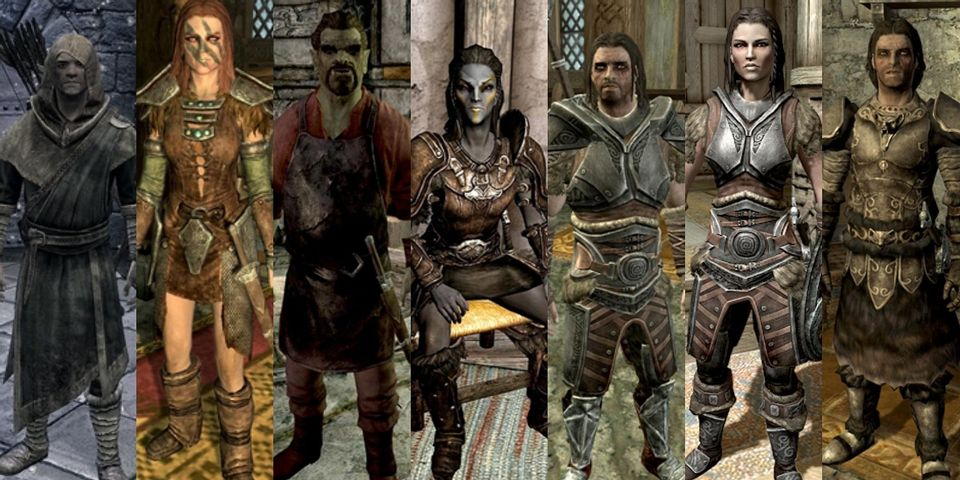
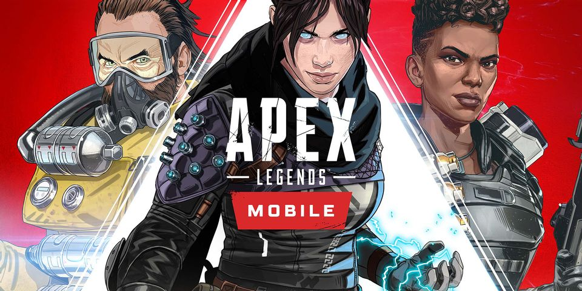
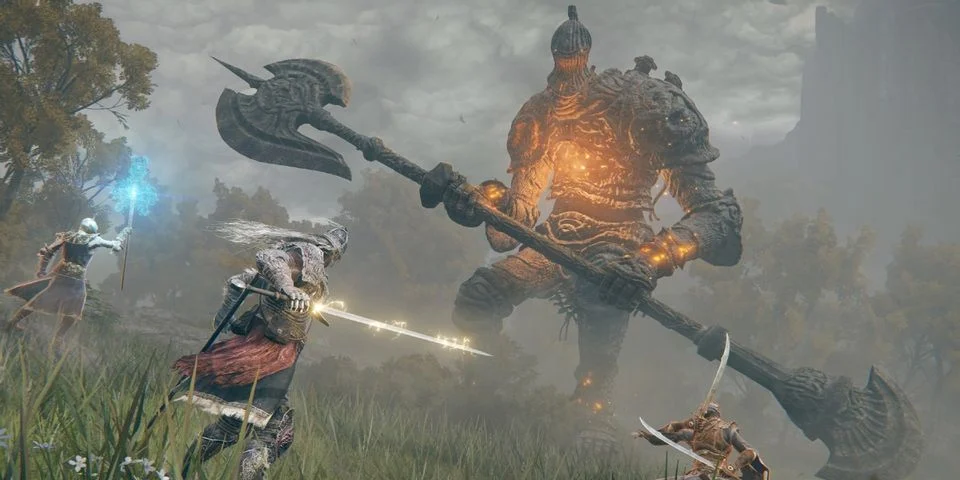
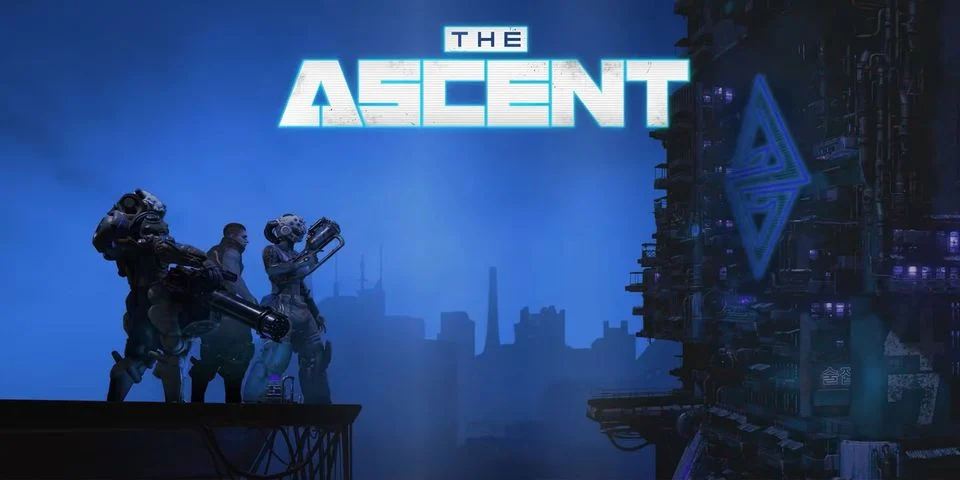
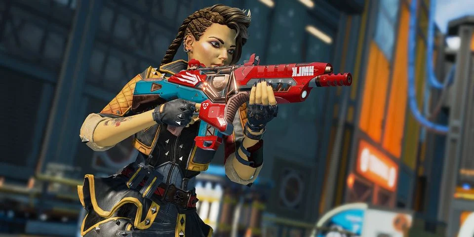

Home
Latest News
About Us
Contact
GTA Online Players Confused Over Hidden Airport Entrance
A Grand Theft Auto Online player finds out of sight entrance to Los Santos International Airport, which has left the community perplexed.
By Joseph Francis Docherty

New Skyrim Mod Vastly Improves More Than 100 NPC Models
The Elder Scrolls 5: Skyrim continues to be a source of experimentation for the modding community, which is always looking to improve the game.
By Andrew Paul Heaton

Apex Legends Players Want Mobile Feature In Base Game
The discovery of a unique and awesome Apex Legends mobile feature leads to requests that it appears in the PC and console version.
By Joshua Duckworth
Significant Donation by CD Projekt Red to Aid Ukraine's Efforts Against Russian Invasion
Cyberpunk and Witcher developer CD Projekt Red support Ukraine’s efforts against the Russian invasion by donating to humanitarian aid.
By Grigori Monaselidze
Ransomware Group Claiming to Have Hacked Nvidia has Been Counter-Hacked
Following recent news that Nvidia was hacked, the ransomware group that claims to have been behind it is in turn hacked itself.
By Kaitlin Ann Meaney

DElden Ring Player Creates Joker in the Game
An Elden Ring player experiments with the game's character creator and makes an impressive replica of The Joker within an hour.
By Whitney Walters
Mizkif Reveals What Would Get Him to Leave Twitch for YouTube
During a recent stream, Mizkif discussed Ludwig's high-profile move from Twitch to YouTube and what would make him consider a similar move.
By Michael Brandon Ingram
Elden Ring Bug Leaves Player Floating in Air on Invisible Horse
An Elden Ring player records a surprising bug that they discovered, which left them hovering in the air without a way to get down.
By Rory Young
Skyrim Grandma Shirley Curry Confirms She Recently Had a Stroke

Cyberpunk RPG The Ascent Will Be Coming to PS4 and PS5

Apex Legends Players Call for Classic Hop-Ups To Return
Hardware Manufacturer Working on Game Pad Holders that Simulate Weapons for VR Games
Call of Duty: Warzone Fans Are Still Calling For Bren Nerfs
«
‹
5
6
7
›
»